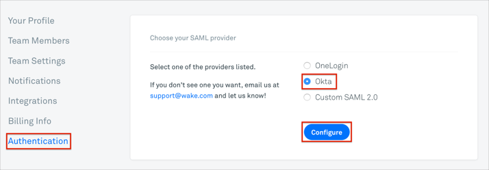

Contact the Wake Support team and request that they enable SAML 2.0 for your account.
Navigate to Settings > Authentication.
Select the Okta radio button.
Click Configure.

On the Configure Okta Authentication page, enter the following:
SSO 2.0 ENDPOINT: Copy and paste the following:
Sign into the Okta Admin Dashboard to generate this variable.PUBLIC CERTIFICATE: Copy and paste the following:
Sign into the Okta Admin Dashboard to generate this variable.
Click Save Configuration.

Done!
Notes:
SP-initiated flows, IDP-initiated flows, and Just In Time (JIT) provisioning are all supported.
Open the following URL: https://[yourSubDomain].wake.com/.
Click Sign in with Okta: